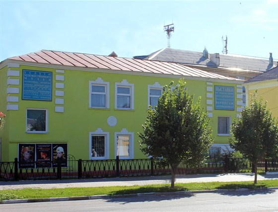
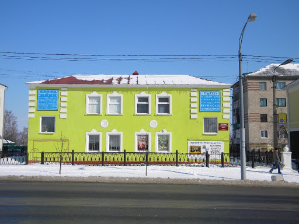
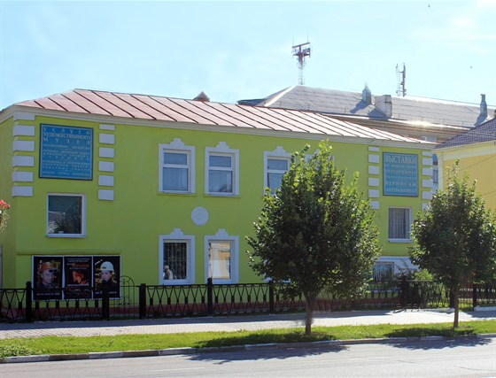
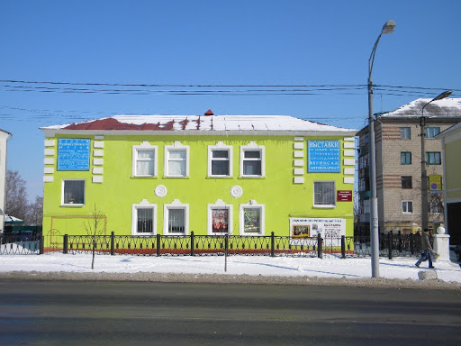

Старооскольский художественный музей
- Режим работы: С 9:30 до 18:00, в субботу до 17:00,
понедельник и воскресенье - выходной - Цена за вход: минимальная программа: 50 руб, максимальная - 150 руб
- Местоположение: ул. Ленина, 57, Старый Оскол, Белгородская обл.
Старооскольский художественный музей расположен
на месте родового дома почетного гражданина
города Старый Оскол, городского головы, представителя купеческого сословия
– Иллариона Илларионовича Симонова, который жил здесь в конце ХIХ в.
При его поддержке в городе были построены: богадельня, пять домов в
приходе Ахтырской церкви (ныне утрачена). За свою деятельность он
пользовался большим уважением среди горожан, его считали не просто
городским головой, но и меценатом.
 В конце 1980-х здание передают художественному музею. Его интерьеры
полностью перестраивают. От первоначальной планировки остаются
только несущие стены. Два арочных портала становятся одноэтажными
тамбурами. На первом этаже располагаются администрация и хранилища,
на втором – выставочные залы. Структура собрания художественного
музея состоит из четырех основных отделов: живопись, графика,
декоративно-прикладное искусство и скульптура. Произведения
позволяют проследить процессы развития советского и постсоветского
искусства и хронологически охватывают период с 1940-х гг. по настоящее время.

Формирование живописной и графической коллекций началось с работ,
переданных музею Художественным фондом РСФСР, Московским комбинатом
живописного искусства и Белгородским фондом культуры. В дальнейшем
коллекция пополнялась картинами современных авторов Черноземья. В
2002 году Российский фонд изобразительного искусства Москвы пополнил
фонд Старооскольского художественного музея живописными и графическими
произведениями художников стран СНГ.

Музейная коллекция гордится произведениями Народных художников РСФСР: Н.
Я. Бута, К. М. Максимова, А. И. Курнакова, А. П. Мамонтова; заслуженных
художников РСФСР: М. А. Маторина, В. В. Пименова, В. И. Рейхета; лауреатов
государственных премий СССР: М. А. Суздальцева, А. И. Курнакова, С. С. Косенкова.
Достойное место в отделе современного искусства занимает творчество
старооскольских художников: И. Н. Хегая, П. С. Шляпникова, В. В. Голышева, Ю. И.
Болотова, Е. М. Марковой.
В конце 1980-х здание передают художественному музею. Его интерьеры
полностью перестраивают. От первоначальной планировки остаются
только несущие стены. Два арочных портала становятся одноэтажными
тамбурами. На первом этаже располагаются администрация и хранилища,
на втором – выставочные залы. Структура собрания художественного
музея состоит из четырех основных отделов: живопись, графика,
декоративно-прикладное искусство и скульптура. Произведения
позволяют проследить процессы развития советского и постсоветского
искусства и хронологически охватывают период с 1940-х гг. по настоящее время.

Формирование живописной и графической коллекций началось с работ,
переданных музею Художественным фондом РСФСР, Московским комбинатом
живописного искусства и Белгородским фондом культуры. В дальнейшем
коллекция пополнялась картинами современных авторов Черноземья. В
2002 году Российский фонд изобразительного искусства Москвы пополнил
фонд Старооскольского художественного музея живописными и графическими
произведениями художников стран СНГ.

Музейная коллекция гордится произведениями Народных художников РСФСР: Н.
Я. Бута, К. М. Максимова, А. И. Курнакова, А. П. Мамонтова; заслуженных
художников РСФСР: М. А. Маторина, В. В. Пименова, В. И. Рейхета; лауреатов
государственных премий СССР: М. А. Суздальцева, А. И. Курнакова, С. С. Косенкова.
Достойное место в отделе современного искусства занимает творчество
старооскольских художников: И. Н. Хегая, П. С. Шляпникова, В. В. Голышева, Ю. И.
Болотова, Е. М. Марковой.